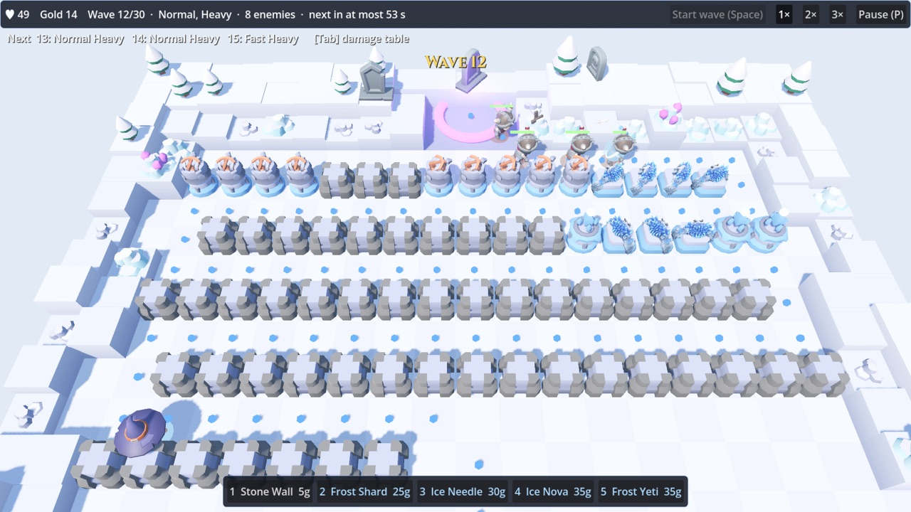

Kein fester WegNo fixed path
Jeder Turm ist eine Mauer. Lenke den Weg in Serpentinen und sieh in der Vorschau, um wie viele Felder er länger wird.Every tower is a wall. Bend the route back on itself and watch the preview show how many cells longer it gets.
Gemeinsam spielenPlay together
1 bis 12 Spieler teilen sich eine Feste und 50 Leben. Jeder Kill bringt allen Gold, KI-Baumeister füllen freie Plätze.1 to 12 players share one fortress and 50 lives. Every kill pays everyone, AI builders fill empty seats.
9 Baumeister, 99 Türme9 builders, 99 towers
Frost, Glut, Stein, Sturm, Gift und Arkan – dazu Kreaturen vom Frostyeti bis zum Lich.Frost, ember, stone, storm, venom and arcane – plus creatures from the frost yeti to the lich.
14 Karten, 4 Jahreszeiten14 maps, 4 seasons
Vom Frostpass bis zur Weißen Feste, mit Kampagne, Hart, Endlos und täglicher Herausforderung.From the Frost Pass to the White Keep, with campaign, Hard, Endless and a daily challenge.
Gefällt dir Wardwinter TD?Enjoying Wardwinter TD?
Ich entwickle meine Spiele allein in meiner Freizeit. Wenn du magst, was du siehst, freue ich mich über einen Kaffee – oder über dein Feedback.I make my games on my own in my spare time. If you like what you see, a coffee makes my day – and so does your feedback.